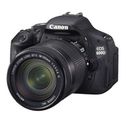

Sadar gak sih, semakin kita sering memotret dan membawa kamera kita kemanapun yang kita inginkan, telah banyak sebagian orang telah melakukan kesalahan loh dalam menyimpan kamera dan lensa, ada yang dengan cueknya di simpan di lemari pakaian, ada yang membiarkan gitu aja di meja kerja rumah, ataupun di dalam lemari buku. well, kamera dan lensa ( beserta perlengkapannya ) bukanlah sesuatu yang murah.

Oleh karena itu, maka kita harus berhati – hati merawat perlengkapan kamera kita. Begitu pula untuk penyimpanannya, kamera DSLR dan aksesorisnya tidak boleh disimpan sesuka kita. karena memiliki komponen sensitif yang mudah rusak kalau kita ceroboh memegangnya. Berikut beberapa hal praktis agar kamera dan lensa anda lebih awet :
Kita hidup didaerah tropis, yang artinya kelembapan cukup tinggi (tepatnya diatas 70%), belum lagi pada saat musim hujan angka itu akan naik. Menyimpan kamera dan lensa dalam waktu lama saat tidak dipakai membutuhkan strategi dan penyimpanan khusus untuk memerangi kelembapan.
// Kenapa Kelembapan Tinggi Buruk Untuk Kamera dan Lensa? //
Kelembapan yang tinggi dan terus- menerus bisa merusak komponen elektronis serta sensor kamera, sementara itu jamur juga bisa tumbuh dan berkembang di optik lensa. Sekali jamur tumbuh, kualitas optik bisa terpengaruh dan kita harus repot membersihkannya. Kalau jamurnya nempel di permukaan luar sih masih gampanglah, kalau tumbuhnya didalam elemen lensa dibagian dalam kita akan sangat kerepotan, biaya membersihkan lensa berkisar antara Rp 250 ribu sampai Rp. 750 ribu loh.. , tergantung kesulitan dan tempat servisnya.
// Kenapa Kelembapan Terlalu Rendah Juga Tidak Bagus? //
Melihat alasan diatas, bukan berarti tingkat kelembaban rendah adalah tempat yang baik untuk menyimpan kamera. Kamera dan lensa itu memiliki komponen mekanis yang perlu bergerak dengan lancar, tahukah kamu kalau didalam lensa atau kamera juga dikasih oli supaya gerakan mekanis lancar dan tidak seret loh… Nah kalau kamera dan lensa kamu tempatkan di area yang sangat kering (kelembapan terlalu rendah) maka ini beresiko fungsi mekanis bisa seret dan terganggu juga… Dan untuk beberapa kamera atau lensa yang memiliki karet sebagai bahan, misal sambungan antar bagian, atau penutup ring fokus, disimpan di tempat kering terlalu lama dapat mengakibatkan karet tersebut menjadi “getas” sehingga mudah rusak.
// Berapa Angka Kelembapan Ideal? //
Angka sekitar 40 – 50 % RH (relative humidity, kelembapan relatif) adalah ideal bagi kamera dan lensa, nah.. relative humidity adalah kelembaban relatif yang merupakan persentase jumlah/kandungan uap air dalam satu volume tertentu terhadap total uap air pada saat jenuh. Kelembaban relatif dapat diukur dari tabel psycometri. Aturan paling aman adalah cek di manual lensa dan kamera anda, cari kata-kata ideal operating range, lalu cek rentang kelembapan yang disarankan. Nah untuk penyimpanan jangka panjang, bagi angka tadi dengan angka dua. Sebagai contoh, angka operating humidity ideal untuk Canon 5D Mark II adalah 85% atau lebih rendah. Maka penyimpanan ideal adalah sekitar 35 sampai 45%.
// Beberapa Cara Penyimpanan Terbaik //
Berikut beberapa cara penyimpanan yang bisa anda lakukan untuk menjaga kondisi lensa dan kamera agar tetap optimal dan prima :) - Belilah Dry Cabinet atau Dry Box Khusus
Dry cabinet adalah lemari khusus yang dirancang untuk menyimpan barang-barang elektronis sepperti foto diatas. Anda bisa membelinya di toko kamera atau toko alat rumah tangga yang besar. Tergantung spesifikasi, kita bisa menyetel angka kelembapan dalam ruang penyimpanan sesuai yang diinginkan.Harga dry cabinet termurah adalah sekitar Rp. 1 Juta loh..
- Silica Gel dan Kotak Kedap Udara
Untuk alternatif murah anda bisa menggunakan kotak kedap udara yang biasa dipakai untuk menyimpan dan menaruh beberapa saset (kantong) silica gel. Anda juga bisa membeli silica gel khusus yang dilengkapi indikator warna untuk mengetahui kandungan air dalam gel seperti dalam foto dibawah. Saat silica gel didalam kotak sudah jenuh dengan air, anda bisa mencolokkannya ke listrik untuk mengeringkan kembali.Harga kotak silica gel ini dibawah Rp 200 ribu.
yappp for the last … Saya sarankan untuk tidak membeli kotak penyimpanan kamera yang dilengkapi elemen pemanas, resiko elemen menjadi terlalu panas cukup besar. Saat pemanas menjadi terlalu panas, sensor didalam kamera bisa terkena getahnya. :)